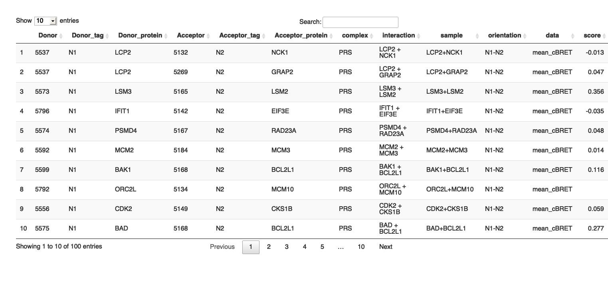

The binaryPPIclassifier package uses machine learning algorithms to prioritize protein-protein interactions (PPIs) by analyzing quantitative data from binary PPI assays and AlphaFold-Multimer predictions.
Installation
You can install the development version of binaryPPIclassifier from GitHub with:
# install.packages("devtools")
devtools::install_github("philipptrepte/binary-PPI-classifier", build_vignettes = TRUE)
library(binaryPPIclassifier)Requirements
The reference set used for training the machine learning algorithm and the PPI data frame that it is applied to needs to have the following format and columns names:

Usage
ppi.prediction()
The function ppi.prediction() is used to train a classifier machine learning algorithms on a set of reference interactions referenceSet and apply it to a test set PPI data set PPIdf. Please see ?ppi.prediction for help on additional parameters that need to be specified.
YOUR_PREDICTION <- ppi.prediction(PPIdf = YOUR_TEST_SET, referenceSet = YOUR_TRAINING_SET)learning.curve()
The function learning.curve() is used to calculate and plot the accuracy, hinge loss and binary cross-entropy loss from the results of your ppi.prediction() result. Please see ?learning.curve for help on additional parameters that can to be specified.
YOUR_LEARNING_CURVE <- learning.curve(ppi_prediction_result = YOUR_PREDICTION) The results are saved in a list and the plot can be accessed using YOUR_LEARNING_CURVE$learning_plot
recovery.rate()
The function recovery.rate() is used to determine fixed cut-offs using a set of reference interactions referenceSet that can be applied to a PPI data set PPIdf (optional) and the recovery rates are calculated for both data sets. Please see ?recovery.rate for help on additional parameters that can to be specified.
YOUR_RECOVERY_RATE <- recovery.rate(PPIdf = YOUR_TEST_SET, referenceSet = YOUR_TRAINING_SET)Vignette
Please see the Vignette for a detailed description or access from within R using vignette("introduction", package = "binaryPPIclassifier"). Make sure that when installing the package you set build_vignettes = TRUE.
Reference
AI-guided pipeline for protein-protein interaction drug discovery identifies a SARS-CoV-2 inhibitor
Philipp Trepte#, Christopher Secker#, Simona Kostova, Sibusiso B. Maseko, Soon Gang Choi, Jeremy Blavier, Igor Minia, Eduardo, Silva Ramos, Patricia Cassonnet, Sabrina Golusik, Martina Zenkner, Stephanie Beetz, Mara J. Liebich, Nadine Scharek, Anja Schütz, MarcelSperling, Michael Lisurek, Yang Wang, Kerstin Spirohn, Tong Hao, Michael A. Calderwood, David E. Hill, Markus Landthaler, Julien Olivet, Jean-Claude Twizere, Marc Vidal, Erich E. Wanker
bioRxiv 2023.06.14.544560; doi: https://doi.org/10.1101/2023.06.14.544560
Contact
Philipp Trepte - philipp.trepte@imba.oeaw.ac.at - LinkedIn
binaryPPIclassifier: https://github.com/philipptrepte/binary-PPI-classifier
Session Info
sessionInfo()
#> R version 4.2.1 (2022-06-23)
#> Platform: x86_64-apple-darwin17.0 (64-bit)
#> Running under: macOS Big Sur ... 10.16
#>
#> Matrix products: default
#> BLAS: /Library/Frameworks/R.framework/Versions/4.2/Resources/lib/libRblas.0.dylib
#> LAPACK: /Library/Frameworks/R.framework/Versions/4.2/Resources/lib/libRlapack.dylib
#>
#> locale:
#> [1] en_US.UTF-8/en_US.UTF-8/en_US.UTF-8/C/en_US.UTF-8/en_US.UTF-8
#>
#> attached base packages:
#> [1] stats graphics grDevices utils datasets methods base
#>
#> other attached packages:
#> [1] knitr_1.40 dplyr_1.1.2 DT_0.24
#>
#> loaded via a namespace (and not attached):
#> [1] pillar_1.9.0 compiler_4.2.1 bslib_0.4.0 jquerylib_0.1.4
#> [5] highr_0.9 tools_4.2.1 digest_0.6.29 jsonlite_1.8.0
#> [9] evaluate_0.16 lifecycle_1.0.3 tibble_3.2.1 pkgconfig_2.0.3
#> [13] rlang_1.1.1 cli_3.6.1 rstudioapi_0.14 crosstalk_1.2.0
#> [17] yaml_2.3.5 xfun_0.32 fastmap_1.1.0 stringr_1.4.1
#> [21] generics_0.1.3 vctrs_0.6.3 htmlwidgets_1.5.4 sass_0.4.2
#> [25] webshot_0.5.3 tidyselect_1.2.0 glue_1.6.2 R6_2.5.1
#> [29] processx_3.7.0 fansi_1.0.3 rmarkdown_2.16 callr_3.7.2
#> [33] magrittr_2.0.3 ps_1.7.1 htmltools_0.5.3 utf8_1.2.2
#> [37] stringi_1.7.8 cachem_1.0.6